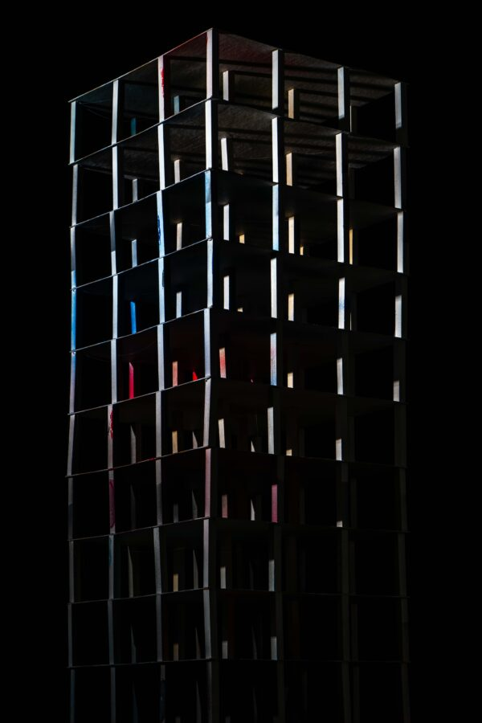

Ross Sawyers Artist Talk
Ross Sawyers: The Future Still Isn’t What It Used to Be
Artist Talk: Saturday, February 21, 2026, 2:00 PM
Exhibition Dates: February 1 – March 7, 2026
Exhibition on view: Thursdays, Fridays, and Saturdays 1:00 – 5:00 PM
The Riverside Arts Center is pleased to present Ross Sawyer’s solo exhibiton, The Future Still Isn’t What
It Used to Be curated by Kristin Taylor in the Freeark Gallery and Sculpture Garden. Please join us for an artist talk on Saturday, February 21, 2026 at 2:00 PM. The exhibition will be on view Thursdays, Fridays, and Saturdays 1:00 – 5:00 PM through March 7, 2026.
This exhibition traces over two decades of work by Ross Sawyers, an artist who uses photography, sculpture, and drawing to explore the relationship between architecture and human aspiration.
From model homes built of cardboard and wood to imagined ruins and mobile shelters, Sawyers constructs and photographs spaces that reveal the tension between collective dreams and their inevitable collapse. The exhibition showcases a sampling of works, including excerpts from an early chapter of his work titled Clear Blue, Sky, which reflects the false optimism of pre-recession housing developments, along with later chapters such as This Is the Place and The Jungle, which examine foreclosure, demolition, and alternative ways of living outside conventional homeownership. His most recent installation, After the Flood, folds together these themes into a vision of the present marked by instability and climate crisis, where rebuilding persists despite climate warning signs.